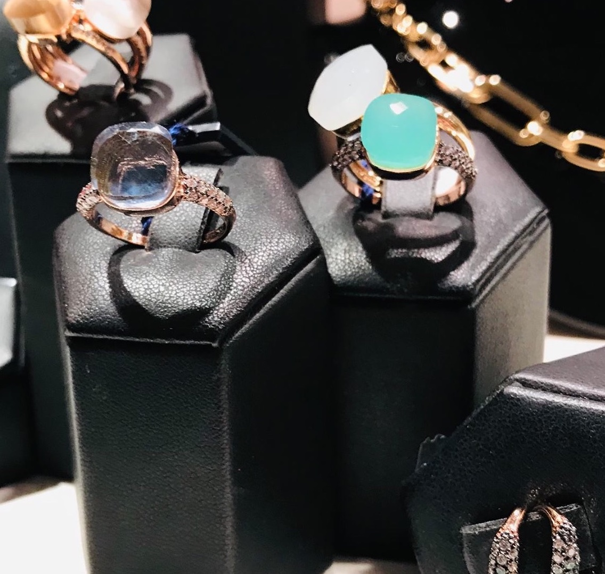
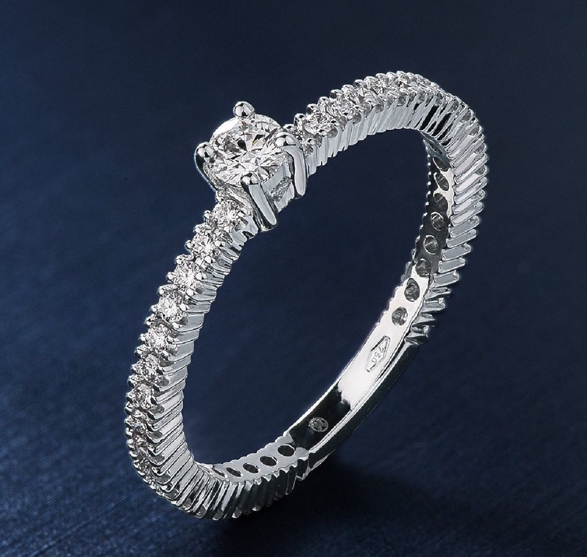

Preziosi
Oro e argento firmati Mirco Visconti, Giovanni Raspini, Luiber e Le Monde de Bijoux. Diamanti certificati, pietre di colore, fedi e creazioni disegnate su misura al banco.
Vedi i gioielliUna tradizione di gioielleria e oggettistica riconoscibile per un gusto raffinato e originale, e per lo spirito di innovazione con cui Alessandra sceglie ogni pezzo.

Due banchi, una sola idea di bellezza
Sessant’anni di attività nel centro storico, una selezione che cambia con le stagioni e con gli autori che entrano in negozio.

Oro e argento firmati Mirco Visconti, Giovanni Raspini, Luiber e Le Monde de Bijoux. Diamanti certificati, pietre di colore, fedi e creazioni disegnate su misura al banco.
Vedi i gioielli
Vetri di Murano, ceramiche d’autore, sculture e complementi d’arredo contemporanei. Pezzi unici o piccole serie, scelti direttamente dagli atelier.
Vedi arte e designStoria, competenza e ricercatezza: un punto di riferimento nel cuore del centro storico.
Alessandra Rebucci
Il negozio apre nel 1963 e non ha mai cambiato indirizzo. Tre generazioni dietro allo stesso banco, con la stessa regola: si vende solo quello che si comprerebbe.
Marchi trattati
Oro e diamanti di scuola valenzana: linee pulite, montature leggere, un lavoro di incastonatura che si nota solo da vicino.
ValenzaArgento fuso a cera persa. Gioielli e oggetti per la casa che invecchiano bene, dalla collana al portacandele.
ToscanaOreficeria italiana quotidiana: catene, girocolli e pendenti pensati per essere portati tutti i giorni.
ItaliaBijoux di ricerca, colore e materiali insoliti. La parte più sperimentale della vetrina.
FranciaIn vetrina questa stagione
Laboratorio
Riparazioni, restauro di pezzi di famiglia, incisioni a mano e a macchina, cambio pile e cinturini, valutazioni e permute. Il preventivo si fa insieme, al banco.